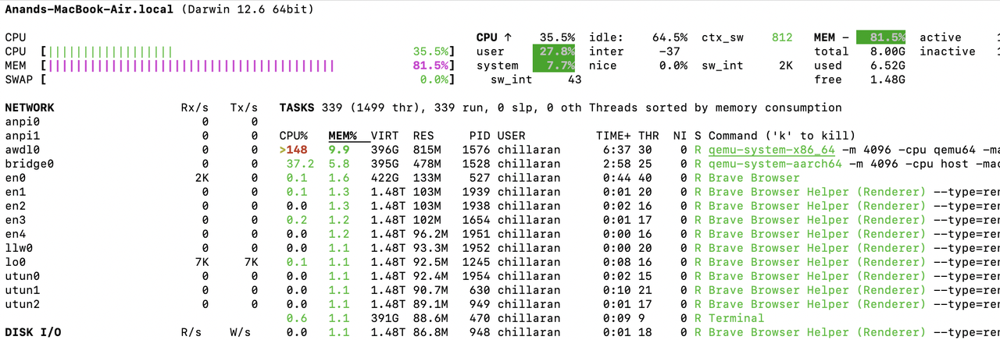

Speed Up AMD64(Intel) VMs on ARM(M1 Mac) Host
Introduction
From 2020, Apple has transitioned from Intel to ARM based Apple Silicon M1. If we run uname -mp on these devices, we can see the CPU architecture details.
$ uname -mp arm64 arm
Let's run the same command on a device using Intel x86 processor.
$ uname -mp x86_64 x86_64
Many popular docker images1 doesn't have ARM64 support yet. When setting up a dev environment in M1 Mac, there are high chances that we stumble on these containers if we are using plain docker or ARM64 VM. So, there is a need to spin up x86_64 VMs.
In this article, lets see how the performance affects when running a cross architecture containers and how to speed it up.
Setup
Lima2 can run foreign architecture(x6_64) VMs on Mac. Let's install lima, start a AMD64 VM & ARM64 VM and install k3s[^k3s] in them. k3s will run multiple process in the background and let's see how resource consumption varies in these VMs.
$ brew install lima $ limactl start linux_arm64 $ limactl start linux_amd64
When starting a VM, we can edit arch parameter in the configuration. Once VM starts, we can see the details by running limactl list.
$ limactl list NAME ARCH linux_amd64 x86_64 linux_arm64 aarch64
Lets login to each VM & install k3s.
$ limactl shell linux_arm64
$ curl -sfL https://get.k3s.io | sh -
$ limactl shell linux_amd64
$ curl -sfL https://get.k3s.io | sh -
If we look at resource consumption on the host machine, x86_84 VM is using way more resources than ARM64 VM. This is because of the emulation layer that is running on top of the VM.

We can login to individual VMs, run top to see the load average as well.
Fast Mode
lima provides fast-mode option for cross architecture VMs which will speed up the performance.
For that, we need to log in to VMs and install emulators.
$ sudo systemctl start containerd $ sudo nerdctl run --privileged --rm tonistiigi/binfmt --install all
After that we can restart the VMs and monitor the resource consumption. On an average, we can see that the resource consumption is reduced by 50%.
Conclusion
In this article, we saw how to run cross architecture VMs on M1 Mac and how to speed up the performance. We can use this technique to run cross-architecture containers on Linux as well.
Need further help with this? Feel free to send a message.